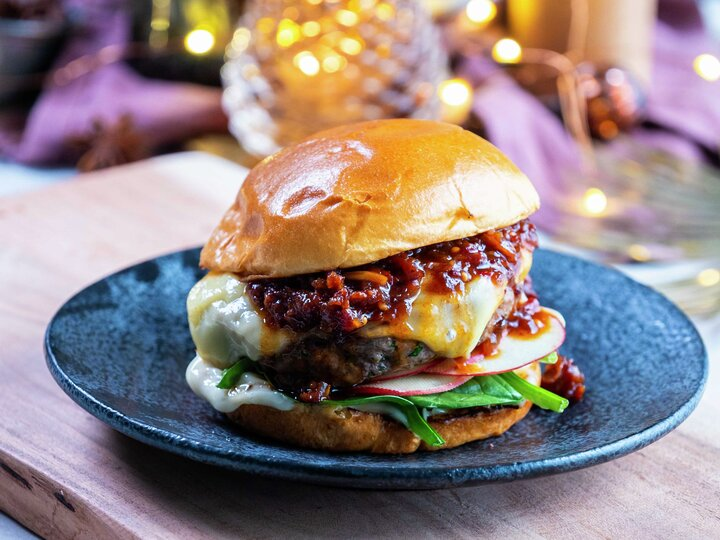

Burger with bacon marmelade
Go to homepage

Description
Saftig burger med baconmarmelade - søtt, salt og spicy! Topp
burgeren med ost, epleskiver, aïoli og spinat for masse smak og
crunch. Perfekt når du har lyst på skikkelig kosemat i julen.
Ingredients
- 2 stk. brioche hamburgerbrød
- 1 stk. eple
- 2 ss aïoli
- 1 dl babyspinat
Baconmarmelade:
- 1 stk. løk
- 2 båter hvitløk
- 1 stk. rød chili
- 2 ss olje til steking
- 200 g bacon
- 1 dl lønnesirup
- 1 ss brunt sukker
- 0,5 ts sennepsfrø
- 250 g cherrytomat
- 2 ss akevitt
- 2 ss rødvinseddik
Burger:
- 1 ss bladpersille
- 300 g kjøttdeig
- 0,5 ts salt
- 1 ts kvernet pepper
- 1 ss smør eller olje
- 4 skiver gulost
Steps
-
Finhakk løk, hvitløk og chili. Varm olje i en kjele og
fres løkblandingen til den er myk og blank.
-
Finhakk bacon og ha det i kjelen. Fres på middels høy
varme til baconet får en fin gyllen farge og begynner å
bli sprøtt. Rør om av og til slik at det ikke svir seg.
-
Tilsett lønnesirup, brunt sukker, sennepsfrø og
cherrytomater i kjelen, og kok opp. Senk varmen og la
marmeladen koke på middels varme til den tykner og fargen
har blitt mørkere og blankere. Dette kan ta rundt en time,
kanskje lenger. Rør om med jevne mellomrom. Pass på at
marmeladen ikke brenner seg i bunnen, og tilsett vann om
den blir for tykk.
-
Smak til med akevitt, rødvinseddik, salt og pepper. Avkjøl
marmeladen, og oppbevar den på glass. Marmeladen er
holdbar i minst to uker om den oppbevares kaldt.
-
Hakk bladpersille. Bland bladpersillen inn i kjøttdeigen
og form burgere, uten å jobbe for mye med deigen. Krydre
burgerne med salt og pepper.
-
Stek burgere i en stekepanne med smør eller olje. Bruk
sterk varme og stek på den ene siden til det pipler ut
kjøttsaft. Snu burgerne og stek videre på den andre siden
til det igjen pipler ut kjøttsaft. Da er burgerne medium
stekt. Skru ned varmen, og legg et par osteskiver på hver
burger. Legg på et lokk til osten har smeltet.
-
Varm hamburgerbrød raskt i stekepannen, eller som anvist
på pakken. Kutt eple i tynne skiver. Smør på aioli, legg
på babyspinat, epleskiver, hamburger og topp med
baconmarmelade.